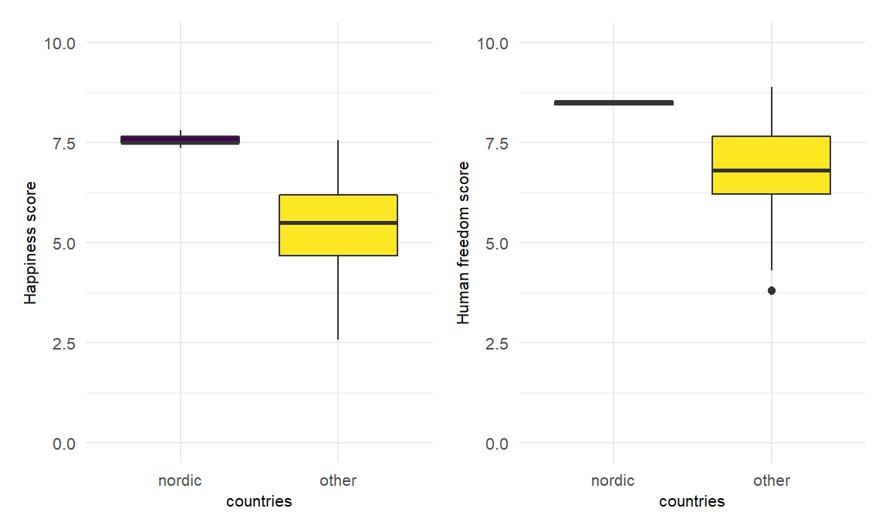

Nordic Exceptionalism

(Add info on idea of “nordic exceptionalism” and outline of anaylsis/exploration) The Nordic Region includes five countries: Denmark, Norway, Sweden, Finland, and Iceland.
Comparing Nordic Countries’ Happiness and Freedom Scores
# Creating Nordic only dataset
nordic_only =
read_csv("./data/merged_df.csv") %>%
filter(countries %in% c("Denmark", "Norway", "Sweden",
"Finland", "Iceland")) %>%
select(-X1) %>%
rename("overall_happiness_score" = "ladder_score")
# Creating dataset with all other countries
global_other = read_csv("./data/merged_df.csv") %>%
select(-X1) %>%
mutate(
countries = str_remove(
countries, "Denmark|Norway|Sweden|Finland|Iceland")
) %>%
rename("overall_happiness_score" = "ladder_score")
#Getting averages across dataframes
nordic_averages = summarise_all(nordic_only, mean)
global_averages = summarise_all(global_other, mean, na.rm = TRUE)
#Removing NAs in 'countries' from last step
nordic_averages[is.na(nordic_averages)] = 0
global_averages[is.na(global_averages)] = 1
#Binding dataframes
nordic_compare =
rbind(nordic_only, nordic_averages, global_averages) %>%
mutate(
countries = as.character(countries),
countries =
str_replace(countries, "0", "nordic_average"),
countries =
str_replace(countries, "1", "other_global_average")
)The below table demonstrates happiness and freedom scores for the five Nordic countries. Notably the human freedom score is an overall, composite score of the economic and social freedom measurements. We can also compare these to the average scores for the all other countries in the world.
nordic_compare %>%
select(countries, overall_happiness_score, human_freedom_score,
personal_freedom_score, economic_freedom_score) %>%
knitr::kable()| countries | overall_happiness_score | human_freedom_score | personal_freedom_score | economic_freedom_score |
|---|---|---|---|---|
| Denmark | 7.64560 | 8.560000 | 9.238444 | 7.890000 |
| Finland | 7.80870 | 8.530000 | 9.268558 | 7.800000 |
| Iceland | 7.50450 | 8.410000 | 9.084634 | 7.740000 |
| Norway | 7.48800 | 8.440000 | 9.259625 | 7.620000 |
| Sweden | 7.35350 | 8.500000 | 9.445978 | 7.560000 |
| nordic_average | 7.56006 | 8.488000 | 9.259448 | 7.722000 |
| other_global_average | 5.47324 | 6.887963 | 6.976827 | 6.799074 |
We can observe in this table ……
The below table similarly shows data for the happiness and freedom scores within Nordic countries and comparitvily to the rest of the world - though now demonstrating scores for other sub groups within human freedom, such as freedom of religion or assembly.
nordic_compare %>%
select(countries, overall_happiness_score, human_freedom_score, religion, association, assembly, security_safety, rule_of_law, homicide, size_of_government) %>%
knitr::kable()| countries | overall_happiness_score | human_freedom_score | religion | association | assembly | security_safety | rule_of_law | homicide | size_of_government |
|---|---|---|---|---|---|---|---|---|---|
| Denmark | 7.64560 | 8.560000 | 7.702222 | 10.000000 | 10.000000 | 9.840000 | 8.687101 | 9.520000 | 4.707251 |
| Finland | 7.80870 | 8.530000 | 7.901482 | 10.000000 | 10.000000 | 9.807725 | 8.639248 | 9.520000 | 4.711377 |
| Iceland | 7.50450 | 8.410000 | 8.122222 | 10.000000 | 10.000000 | 9.880000 | 7.757267 | 9.640000 | 5.811087 |
| Norway | 7.48800 | 8.440000 | 7.407407 | 10.000000 | 10.000000 | 9.933333 | 8.556488 | 9.800000 | 4.927812 |
| Sweden | 7.35350 | 8.500000 | 8.884815 | 10.000000 | 10.000000 | 9.799864 | 8.539644 | 9.560000 | 4.542765 |
| nordic_average | 7.56006 | 8.488000 | 8.003630 | 10.000000 | 10.000000 | 9.852184 | 8.435950 | 9.608000 | 4.940059 |
| other_global_average | 5.47324 | 6.887963 | 7.476429 | 7.536765 | 7.113971 | 8.159625 | 5.108327 | 7.638562 | 6.450821 |
We can observe in this table….
nordic_compare %>%
select(-overall_happiness_score) %>%
pivot_longer(
human_freedom_score:size_of_government,
names_to = "freedom_subgroup",
values_to = "score"
) %>%
mutate(
countries = str_remove(
countries, "nordic_average|other_global_average")
) %>%
filter(str_detect(countries, "Denmark|Norway|Sweden|Finland|Iceland"),
str_detect(freedom_subgroup,
"religion|rule_of_law|size_of_government")) %>%
ggplot(aes(x = countries, y = score, fill = freedom_subgroup)) +
geom_bar(stat = "identity", collor = "black",
position = position_dodge()) +
ylim(min = 0, max = 10) +
labs(
title = "Average scores of different types of freedoms among Nordic countries"
)nordic_compare %>%
select(-overall_happiness_score) %>%
pivot_longer(
human_freedom_score:size_of_government,
names_to = "freedom_subgroup",
values_to = "score"
) %>%
filter(str_detect(countries,
"nordic_average|other_global_average"),
str_detect(freedom_subgroup,
"religion|rule_of_law|size_of_government")) %>%
ggplot(aes(x = countries, y = score, fill = freedom_subgroup)) +
geom_bar(stat = "identity", color = "black",
position = position_dodge(), width = 0.5) +
ylim(min = 0, max = 10) +
labs(
title = "Average scores of different types of freedoms between Nordic and all other countries",
x = "group"
)
Statistical Testing: Nordic region vs Other countries
Notably, we lack data on the variance within country measures in the original datasets, limiting our ability to conduct an ANOVA test and see if the any one of the Nordic countries’ mean happiness and freedom scores significantly differed from the others.
#Reformatting data for tests and some visuals
merged_setup = read_csv("./data/merged_df.csv") %>%
select(-X1) %>%
rename("overall_happiness_score" = "ladder_score") %>%
select(countries, overall_happiness_score,
human_freedom_score) %>%
mutate(
countries = case_when(
countries == "Denmark" ~ "nordic",
countries == "Norway" ~ "nordic",
countries == "Sweden" ~ "nordic",
countries == "Finland" ~ "nordic",
countries == "Iceland" ~ "nordic"
)) %>%
mutate(countries = as.character(countries))
merged_setup$countries[is.na(merged_setup$countries)] = "other"Comparing mean happiness and freedom scores between Nordic and all other countries:
plot_freedom =
merged_setup %>%
ggplot(aes(y = human_freedom_score,
x = countries,
fill = countries)) +
geom_boxplot(stat = "boxplot", show.legend = FALSE) +
labs(y = "human freedom score") +
ylim(min = 0, max = 10)
plot_happy =
merged_setup %>%
ggplot(aes(y = overall_happiness_score,
x = countries,
fill = countries)) +
geom_boxplot(stat = "boxplot", show.legend = FALSE) +
labs(y = "overall happiness score") +
ylim(min = 0, max = 10)
plot_happy | plot_freedom
We carried out a two-sample t-test to see whether the mean differences for overall happiness and freedom scores between Nordic countries and the rest of the world are statistically significant.
Checking assumption of group variance homogeneity
When checking the variance in Nordic versus all other countries happiness scores, the p-value of <0.05 in the output below indicates that our group variances are significantly different and we cannot assume equal variance in the t-test.
res.ftest = var.test(overall_happiness_score ~ countries, data = merged_setup)
print(res.ftest)##
## F test to compare two variances
##
## data: overall_happiness_score by countries
## F = 0.026679, num df = 4, denom df = 147, p-value = 0.002783
## alternative hypothesis: true ratio of variances is not equal to 1
## 95 percent confidence interval:
## 0.009282815 0.221427779
## sample estimates:
## ratio of variances
## 0.02667904When checking the variance in Nordic versus all other countries freedom scores, the p-value of <0.05 in the output below indicates that our group variances are significantly different and we cannot assume equal variance in the t-test.
res.ftest = var.test(human_freedom_score ~ countries, data = merged_setup)
print(res.ftest)##
## F test to compare two variances
##
## data: human_freedom_score by countries
## F = 0.0032982, num df = 4, denom df = 156, p-value = 4.387e-05
## alternative hypothesis: true ratio of variances is not equal to 1
## 95 percent confidence interval:
## 0.001149647 0.027365716
## sample estimates:
## ratio of variances
## 0.003298164Two sample t-test
Results from t-test comparing overall happiness in Nordic vs other countries.
t.test(overall_happiness_score ~ countries,
data = merged_setup, var.equal = FALSE) %>%
broom::tidy() %>%
select(estimate, statistic, p.value) %>%
knitr::kable()| estimate | statistic | p.value |
|---|---|---|
| 2.157321 | 18.49376 | 0 |
Results from t-test comparing human freedom in Nordic vs other countries.
t.test(human_freedom_score ~ countries,
data = merged_setup, var.equal = FALSE) %>%
broom::tidy() %>%
select(estimate, statistic, p.value) %>%
knitr::kable()| estimate | statistic | p.value |
|---|---|---|
| 1.650994 | 18.17931 | 0 |
According to the above resutls, we have sufficient evidence to say that mean citizen happiness in Nordic countries is significantly different from the rest of th world. And that mean human freedom in Nordic countries is significantly difference from the rest of the world.
These results should be interpreted with caution. ******(likely underpowered)